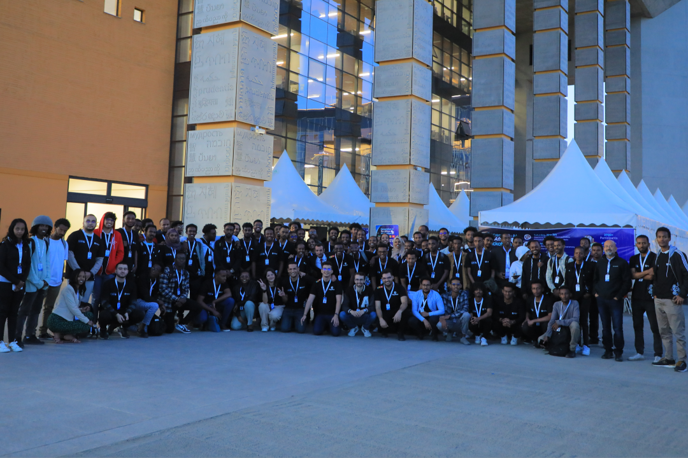

A2SV 2023: Umwaka w'Ubuhanga Bushishikaje n'Uburezi bw'Ikoranabuhanga Bushya mu Afurika
2023 yari umwaka w'iterambere n'ubuhanga muri A2SV, wibanze ku burambe nyabwo n'iterambere ry'isi nyayo. Umuryango wagutse cyane mu ngaruka zawo, utoza abanyeshuri 484 mu Afurika yose — urenze intego yacu y'abanyeshuri 330.
Ibikorwa by'Ingenzi mu 2023
- Abanyeshuri babonye amahirwe y'imirimo muri Silicon Valley
- Kwaguka muri Gana n'ubufatanye bushya bwa kaminuza
- Ubufasha bukomeje buva kuri Google
- Ihiganwa rinini cyane mu Afurika rifite abitabiriye 3.700 baturuka mu bihugu 47
- Amahirwe 55 ku isi mu masosiyete y'ikoranabuhanga harimo Google, Block Inc., Bloomberg, na Goldman Sachs
- Imyanya y'imirimo 142+ yaremwe muri A2SV
Guha Imbaraga binyuze mu Burezi bwiza
A2SV yashimangiye uburezi bw'ikoranabuhanga bw'ubuntu bwegeranye muri Etiyopiya na Gana. Umuryango washyize abasoje ba A2SV 100% nk'abayobozi b'uburezi, ushyira urubyiruko rw'imyaka 21-23 mu myanya y'ubuyobozi kugira ngo bubake porogaramu zirambye.
Kwaguka mu Afurika n'Ubufatanye
Twagutse muri Gana muri Werurwe 2023, dufatanya na Kaminuza ya Ghana. Muri Ugushyingo, twafatanyije na Kaminuza ya Adama Science and Technology muri Etiyopiya, dushyiraho ubufatanye bwacu bwa gatatu muri Etiyopiya. Twasinyiye kandi amasezerano y'ubufatanye na Abrehot Library n'Ikigo cy'Ubwenge Bw'Ikoranabuhanga cya Etiyopiya.
Uburezi bwa kure bwageze ku banyeshuri 53 mu Afurika yose.
Amatsinda ya Core Dev n'Imishinga y'Ubuhanga
Imishinga itanu y'ubuhanga yavuye mu itsinda rya Core Dev rya A2SV — rigizwe n'abasoje bafite uburambe mu masosiyete nka Google, Databricks, na Palantir:
- Adot — Porogaramu y'ubuzima bw'ababyeyi itanga amakuru akwiye mu ndimi z'aho
- Akil — Urubuga ruhuza imiryango itari iya Leta n'abakozi b'ubwitange
- SkillBridge — Urubuga rw'imyitozo y'ibizamini rushingiye kuri AI ku basaba kwiga muri kaminuza muri Etiyopiya
- AfroChat — Sisitemu ya generative AI yakozwe ku buryo bukwiye isoko ry'ikoranabuhanga rya Afurika
- RateEat — Urubuga rw'amakuru y'amahoteli rutanga menu, ibiciro, ibikoresho, n'ibitekerezo muri Etiyopiya
Ihiganwa rya A2SV Generative AI
Twakoreye ihiganwa rinini cyane mu Afurika kuva muri Kanama kugeza muri Ugushyingo 2023:
- Abitabiriye 3.700 baturuka mu bihugu 47 by'Afurika
- Imiterere y'ibyiciro byinshi ifite amahugurwa kuri generative AI
- Ihiganwa rikomeye rya nyuma i Addis Ababa rifite amatsinda icyenda
- Ibihembo bya 30.000 $
Igikorwa cyagaragaje ingufu, ishyaka, n'ubuhanga bw'abahanga b'Abanyafurika.
Guhuzwa n'Intego z'Iterambere Rirambye
Ibikorwa bya A2SV mu 2023 byasubije ku ntego nyinshi z'iterambere rirambye z'Umuryango w'Abibumbye:
- SDG 4 — Uburezi Bwiza: Bigishije abanyeshuri barenze 484
- SDG 8 — Imirimo Myiza: Yaremye imirimo 142+ harimo 80% ijya ku rubyiruko
- SDG 9 — Ubuhanga: Yateje imbere ibicuruzwa bitanu bya CoreDev
- SDG 10 — Kugabanya Amacakubiri: Yabonye amahirwe 55 y'ikoranabuhanga ku isi
- SDG 17 — Ubufatanye: Yubatse ubufatanye na za kaminuza enye
Dushimira inkunga ya Google, yatumye porogaramu z'ubuntu n'imihuza y'imyitozo mu masosiyete akomeye y'ikoranabuhanga bishoboka.
Turasaba abashyigikizi gutanga binyuze mu nkunga, ubuyobozi, ubufatanye mu bisuzuma, na porogaramu z'imiryango. Inkunga zanyu zihinduka ku buryo butaziguye mu kwigisha abanyeshuri b'Abanyafurika no kubashyiraho inzira z'imirimo. Sura a2sv.org/donate kugira ngo ushyigikire umurimo wacu.